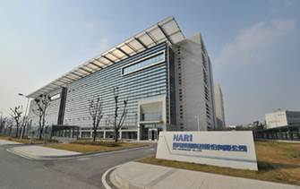
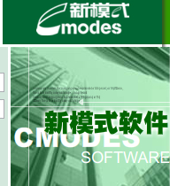
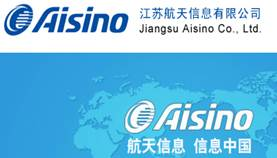

信工院校企合作单位及简介
1.国电南瑞科技股份有限公司
国电南瑞科技股份有限公司成立于2001年2月28日，由南京南瑞集团公司作为主发起人，于2003年10月16日在上海证券交易所上市并向社会公众发行股票，成为国家电网公司系统内的首家上市公司，股票简称“国电南瑞”，证券代码“600406”。

国电南瑞分设三个中心、八家分公司、一个事业部，拥有七家全资子公司和五家控股子公司。公司业务覆盖智能电网领域、轨道交通控制及工业控制领域、新能源控制领域、节能环保领域，专业从事电网调控技术、电网安全稳定控制技术、变电技术、配电技术、农村电气化技术、用电技术、风电光伏等电气控制技术、轨道交通控制技术、工业控制技术、节能和环保技术的研发应用，提供各专业全方位解决方案和产品设备。
2.焦点科技股份有限公司
焦点科技股份有限公司（股票代码：002315），成立于1996年1月9日，是国内领先的综合型第三方B2B电子商务平台运营商，其开发及运营的中国制造网（Made-in-China.com）位列国内B2B电子商务领域前三甲。该平台现已成为全球采购商采购中国制造产品的重要渠道。
焦点科技专注服务于全球贸易领域，在帮助中国中小企业应用互联网络开展国际营销、产品推广方面拥有超过十年的成功经验。公司积极平衡中国供应商与全球采购商，注册免费会员与注册收费会员之间的服务与利益以维持中国制造网电子商务平台的持续稳定发展，并获得公司营业收入及盈利持续增长。
2010年，焦点科技成功收购台湾本土最大的B2B电子商务平台文笔国际股份有限公司，实现两岸行业内首度牵手，借此番收购，焦点科技成功整合两岸B2B行业资源，为大陆企业、台湾企业及海外采购商的三方无障碍沟通创造了便利。
3.新模式软件集成有限公司
南京新模式软件集成有限公司是以数据管理和数据安全为核心业务，从事软件产品研发、生产、销售及服务，行业化软件解决方案研发及实施的“国家规划布局内重点软件企业”；是中国数据管理与数据安全领域的开拓者与领跑者。

公司总部位于南京市高新区南京软件园，并在北京、上海、广州、成都等城市拥有十几家分支机构、百余家合作伙伴，以及企业管理研究所、信息技术培训学校等专业化咨询服务机构。经过多年的积累，新模式已形成以原创和国际领先的DG（图档卫士/文档卫士）为核心的“数据安全和知识产权管理”和以国内领先的CmodesPDM（产品数据管理）及CPChain（产品链管理）为核心的“产品生命周期管理”两大系列产品，以及电力、公交、连锁等行业解决方案。新模式凭借其在数据管理与安全领域的优势，成功为南车集团、三一重工、太原重工等一大批制造业龙头企业以及江苏电力、苏宁电器、雅高巴士等知名企业提供了优质的产品和全面的解决方案.
4.江苏爱信诺航天信息科技有限公司
江苏爱信诺航天信息科技有限公司（原江苏苏北航天信息有限公司）是航天信息股份有限公司（股票代码：600271）控股的一家软件企业，2004年11月成立，注册资金8300万元。
公司总部位于南京高新技术产业开发区，在扬州、泰州、南通、盐城、淮安、宿迁、徐州、连云港等地设立了分子公司，从业人员600余人，服务网络覆盖全省60余个区县。公司依托航天信息的技术优势、人才优势和组织大型工程的丰富经验，以信息安全为主业，致力于计算机系统应用的开发、生产、系统集成和推广应用。公司承担了江苏省“金税工程”、“金盾工程”、“金卡工程”等国家级重点工程的建设及推广，是国家大型信息化工程和电子政务领域的主要参与者。公司先后获批成为高新技术企业、江苏省规划布局内重点软件企业、国家规划布局内重点软件企业，通过ISO9001国际质量管理体系认证和CMMI三级认证，拥有“建筑智能化工程设计与施工贰级”资质。
5.江苏苏北航天信息有限公司
江苏航天信息有限公司是由航天信息股份有限公司（股票代码：600271）与中国航天科工南京晨光集团联合投资组建的高新技术企业。公司以信息技术为主业，专注于税务、企业、国防及高校等领域的信息化建设。

公司下设研发中心、客服中心、软件事业部、市场部、人力资源部、财务审计部、物流部和质量管理部等部门，并投资成立了江苏爱瑞信晨信息科技有限公司和南京爱信诺航天信息培训中心。公司强化科学管理，关注客户需求，在同行业中率先通过了ISO9001国际质量管理体系认证、ISO14000环境管理体系认证、ISO27000信息安全体系认证和CMMI （软件能力成熟度模型集成）三级评估，并通过了国家高新技术企业、江苏软件企业及南京市软件服务企业认定。公司自成立以来，遵循“以人为本，协同创新”的企业文化理念，以科技创新、服务先导为经营方针，凭借良好的市场信誉和技术实力，依托航天在技术、人才、资源和管理等方面的综合优势,被授予江苏省及南京市“中小企业信息化服务示范单位”荣誉称号。
6.南京洛普股份有限公司
南京洛普股份有限公司起源于中国电子科技集团公司第十四研究所，是国内最早研制、生产大型LED显示屏的机构。洛普公司主要从事LED显示系统、智能化工程及计算机信息系统集成、智能交通系统、工业自动化控制系统、微波暗室等领域相关硬件和软件产品的开发、系统设计及工程承包，以及电缆组件等产品的研制。
1994年，改制为股份制公司，洛普朝着现代化企业迈出关键步伐。在随后的二十余年里，洛普不仅继续在LED显示屏领域独占鳌头，并且逐步发展为国内知名的系统集成供应商，获得了住建部授予的电子工程与建筑智能化工程专业承包两项壹级资质、电子通信广电行业电子工程类（电子系统）工程设计甲级证书与建筑智能化系统工程设计甲级证书，以及工业和信息化部授予的计算机信息系统集成二级资质，并已通过ISO9001质量管理体系及ISO14001环境管理体系认证。
7.江苏南大苏富特科技股份有限公司
江苏南大苏富特科技股份有限公司成立于1998年，2001年4月，公司在香港联交所创业板挂牌 (股票代码：08045) 上市。2008年公司由软件股份有限公司更名为科技股份有限公司。目前，公司在香港、北京、南京、深圳、南昌、沈阳、苏州等地拥有20余家控股子公司，拥有近千名研发技术人员。是一家集网络安全、系统软件、系统集成服务、通讯技术、物联网应用、软件外包服务及软件人才培训以及生物医药、医疗健康等领域的多元化发展的高科技集团。
2008年以来，集团秉承“做国际科技成果产业化践行者”的理念，依托南京大学雄厚的科研实力和优秀的海内外人才资源，与南京大学在产、学、研方面进行了更加广泛深入的合作，同时携手美国麻省理工学院（MIT）、IBM等国际一流院校和企业合作，致力于高科技成果的产业化。
8.南京海洋高压容器制造有限公司
南京海洋高压容器制造有限公司是一家从事容器制造的大型民营企业，属下有南京海洋高压容器制造有限公司、南京六合海洋压力容器制造有限公司、南京海洋高压容器制造有限公司滁州分公司。目前生产的产品有高、中、低压各种类不同品种容器，高压管道反应釜、塔罐、槽车、箱式罐车、制药设备、医疗器械、化工成套设备；钛锆合金材、复合材料和有色金属设备的设计、制造。行车最大起重吨位为250吨，最大卷板能力为250mm及各种大型吨位、数控机加设备，热处理、探伤室和物理性能化学实验室。
拥有良好的经营环境以及前瞻性的运作团队。以人为本是公司兴业之本，集聚社会资源、驻宁院校人才和技术研发支撑为企业跨跃发展做百年企业奠定基础,并具备A1、A2类压力容器设计和制造资质、医疗器械及B1类压力容器制造资质，获得欧盟CE认证，正在申请B2、B3、C2、C3设计制造资质、美国DOT和船检生产制造资质。
9.大连汇博信息技术有限公司
大连汇博信息技术有限公司注册资本2000万，主要从事软件开发、培训、服务外包和软件园区运营等业务，先后与英特尔、微软、HP、IBM和英国CIMA等公司在教育培训、软件开发和业务流程外包等方面展开合作。2012年成为英特尔在全球的战略合作伙伴和服务提供商（编号:1000064373），2012年成为微软供应商（编号：2281640），与国内100多所高校在人才培养、教师培训、学生实训、联合研发、共建专业等方面达成了合作协议，并与200多家软件开发企业在员工培训、人事派遣、服务外包、合作研发等方面展开了合作。
10.新华科技（南京）系统软件有限公司
新华科技（南京）系统软件有限公司是新华科技集团与江苏高科技投资集团有限公司、沈阳庆全物贸有限公司共同投资成立的高科技企业，是中国最早的Linux产业发展商之一。目前已形成以Linux为特征的完整的基础操作系统产品链，产品包括通用计算机操作系统、服务器操作系统、嵌入式操作系统、行业专用操作系统及完整的解决方案，并且为相关的芯片厂家、嵌入式设备厂家以及各种制造厂家提供自主可定制的操作系统。
11.镇江畅信超声电子有限公司
镇江畅信超声电子有限公司，是以医疗超声诊断系统（B超）及超声治疗设备（HIFU）、无损检测（飞机、铁轨及车轮）和水下声成像系统为主要对象的研究、开发机构和实体单位。
12.南京博聚电子研究所
研究所主要由原中国科学院和国内高校的研究员、教授、博士生导师、高工及年青的博士、硕士等组成。主要从事毫米波微波应用技术、微波遥感技术、智能化仪表技术和光机电综合应用等研究。主要产品是提供毫米波微波测试设备（含遥感）；各类测试转台（用于天线测试、rcs测试、emc测试和整机测试等）；科普光学和射电望远镜等定型产品。其技术成果已为国家几个重大科研项目研制了重要配套设备，如大气遥感辐射计、射电六分仪和3mm目标辐射及插损特性测试设备等。
13.中国联合网络通信有限公司南京市分公司
中国联合网络通信集团有限公司（简称“中国联通”）于2009年1月6日在原中国网通和原中国联通的基础上合并组建而成，在国内31个省（自治区、直辖市）和境外多个国家和地区设有分支机构，是中国唯一一家在纽约、香港、上海三地同时上市的电信运营企业，连续多年入选“世界500强企业”。
中国联通主要经营固定通信业务，移动通信业务，国内、国际通信设施服务业务，卫星国际专线业务、数据通信业务、网络接入业务和各类电信增值业务，与通信信息业务相关的系统集成业务等。中国联通于2009年4月28日推出全新的全业务品牌“沃”，承载了联通始终如一坚持创新的服务理念，为个人客户、家庭客户、集团客户提供全面支持。
14.富士康软件（南京）有限公司
富士康軟件公司總部位於南京市浦口區軟件基地。公司已在南京設立規模500人的富士康(南京)軟件研發中心，同時著手建設占地2700畝(約55萬坪)以上的南京軟件基地。軟件基地完工並投入運營後將形成3萬人的研發和生産規模，成爲在國際上規模和水平都名列前茅的企業科技園區，同時吸引上下游配套企業，形成完整的産業鏈。公司計劃在未來5年聚集3萬名軟件工程師，打造國內外技術水準一流的軟件設計開發生産平臺，將成爲南京單體規模最大的軟件企業。
15.南京鼎恩电子信息技术有限公司
南京鼎恩电子信息有限公司,座落于六朝古都南京。公司以南京大学为技术依托，专注于智能交通系统与LED显示系统，围绕高速公路全线监控与隧道监控，超限检测与收费站车道外设搭建起以解决方案，产品和服务为主体的业务架构，在产品的研发设计，生产制造，工程实施和系统集成方面具有领先的竞争优势，成功参与实施了众多新建高速公路的全线监控与隧道内LED显示产品的供货与安装，通过过硬的产品质量，一流的施工队伍，贴心的售后服务，获得了业主与集成商的一致好评！ 鼎恩电子将始终秉承“诚信、求真、敬业、创新”的企业理念,专注于交通智能化领域，通过为广大用户提供先进的产品、满意的工程实施和售后服务，来保持与用户的长期合作、共同发展和持续成功。
16.镇江飞龙科技有限公司
镇江市飞龙科技有限公司是一家集安装、维修、售后数字网络终端产品的专业企业。依托于专业的技术队伍，丰富的现场管理经验，良好的企业形象，扎根于数字网络终端产品的服务前沿。公司常年维修翻新各种版本全系列DVB、IPTV,及数字电视机顶盒派生产品及网络宽带的ADSL MODEM、CABLE MODEM、网络交换机等相关通信产品进行专业级的维修。测试环境安全，老化标准规范，检测手段完备，避免了作坊式的无信号源无老化检测的维修翻新。在与国内一流产品制造商和网络运营商的长期合作中，不断适应客户要求，保证质量提高效率；不断总结和探索，相继开发了相关通信产品的售后维修管理软件平台并建立了专业的维修车间；公司服务对象含盖各地广电网络公司、电信、移动、联通等运营商。
17.南京金晓电子信息有限公司
南京金晓电子信息有限公司是2002年注册在南京大学国家级大学科技园的高新科技企业，主要从事智能交通、电子监控、网络产品、交通节能、环境监测等高科技产品的开发、生产和销售，为公路、航道、建筑物等智能化工程、计算机网络工程提供全面的、专业的技术服务。公司以南京大学为技术依托，现已形成产品的科研生产、设计制造、安装施工等核心优势，具有大型综合信息系统集成管理的能力。
公司专注于智能交通机电设备研制开发及生产推广，销售的产品以自主知识产权产品为主，定位于设备供应商层面。经过多年的努力，金晓品牌已被打造成为交通机电行业内的知名品牌，公司目前拥有公路机电和车载两大系列产品，已形成智能交通系列产品的科研和生产能力。公司目前在交通机电行业同类产品竞争中优势明显，产品质量上乘服务周到及时，公司主打产品市场占有不断扩大，销售生产供应售后服务稳定可靠。
公司在飞速发展的过程中聚集了一大批精英，拥有本科以上学历或高中职称的技术人员超过80%。公司下设软、硬件研发中心，市场部，工程部等部门，拥有当代一流的仪器设备和完备的检测手段。
18. 长城宽带网络服务有限公司南京分公司
长城宽带网络服务有限公司（ Great Wall Broadband Network Service Co., Ltd. 缩写为 GWBN ）—中国推行互联网宽带接入的先驱，由长城集团和中信集团联合投资设立，在全国 30 多个城市设有分支机构。自 2000 年 4 月成立以来，长城宽带以新世纪高科技发展为契机，致力于以新一代以太网技术为基础的宽带网络建设，为用户提供从接入到骨干、从天空到地面的端到端宽带解决方案，并逐步发展了基于多媒体技术的宽带产品和各种增值服务。